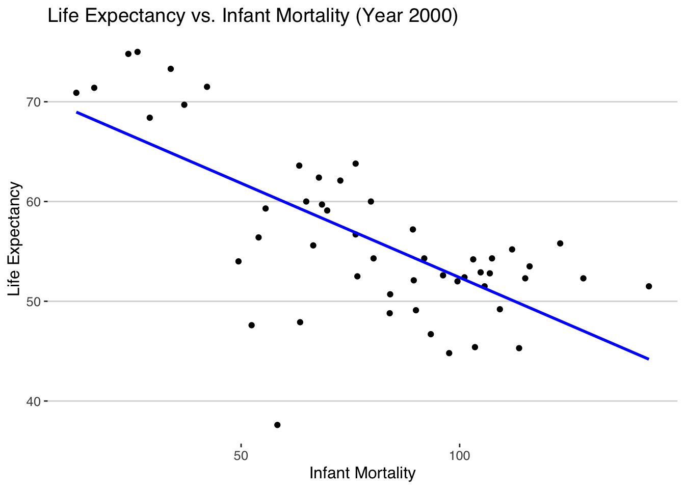
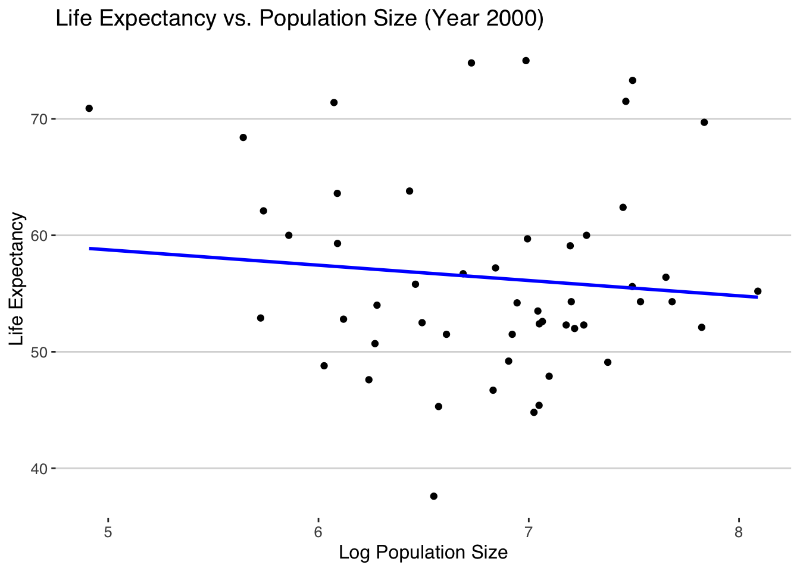
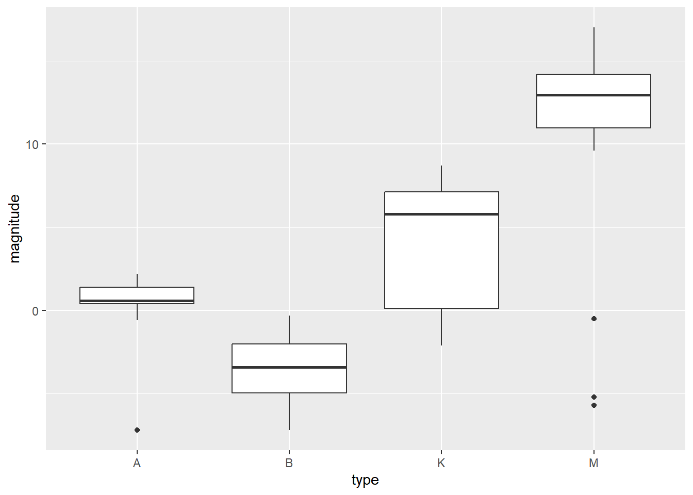

country year infant_mortality life_expectancy fertility
1 Albania 1960 115.40 62.87 6.19
2 Algeria 1960 148.20 47.50 7.65
3 Angola 1960 208.00 35.98 7.32
4 Antigua and Barbuda 1960 NA 62.97 4.43
5 Argentina 1960 59.87 65.39 3.11
6 Armenia 1960 NA 66.86 4.55
population gdp continent region
1 1636054 NA Europe Southern Europe
2 11124892 13828152297 Africa Northern Africa
3 5270844 NA Africa Middle Africa
4 54681 NA Americas Caribbean
5 20619075 108322326649 Americas South America
6 1867396 NA Asia Western Asia
Processing data
#get an overview of data structurestr(gapminder)
'data.frame': 10545 obs. of 9 variables:
$ country : Factor w/ 185 levels "Albania","Algeria",..: 1 2 3 4 5 6 7 8 9 10 ...
$ year : int 1960 1960 1960 1960 1960 1960 1960 1960 1960 1960 ...
$ infant_mortality: num 115.4 148.2 208 NA 59.9 ...
$ life_expectancy : num 62.9 47.5 36 63 65.4 ...
$ fertility : num 6.19 7.65 7.32 4.43 3.11 4.55 4.82 3.45 2.7 5.57 ...
$ population : num 1636054 11124892 5270844 54681 20619075 ...
$ gdp : num NA 1.38e+10 NA NA 1.08e+11 ...
$ continent : Factor w/ 5 levels "Africa","Americas",..: 4 1 1 2 2 3 2 5 4 3 ...
$ region : Factor w/ 22 levels "Australia and New Zealand",..: 19 11 10 2 15 21 2 1 22 21 ...
#determine the type of object gapminder isclass(gapminder)
[1] "data.frame"
# Code that assigns only the African countries to a new object/variable called africadata. #Run str and summary on the new object you created.# Use subset to filter rows where Continent is "Africa"africadata <-subset(gapminder, continent =="Africa")# Display the structure of africadatastr(africadata)
'data.frame': 2907 obs. of 9 variables:
$ country : Factor w/ 185 levels "Albania","Algeria",..: 2 3 18 22 26 27 29 31 32 33 ...
$ year : int 1960 1960 1960 1960 1960 1960 1960 1960 1960 1960 ...
$ infant_mortality: num 148 208 187 116 161 ...
$ life_expectancy : num 47.5 36 38.3 50.3 35.2 ...
$ fertility : num 7.65 7.32 6.28 6.62 6.29 6.95 5.65 6.89 5.84 6.25 ...
$ population : num 11124892 5270844 2431620 524029 4829291 ...
$ gdp : num 1.38e+10 NA 6.22e+08 1.24e+08 5.97e+08 ...
$ continent : Factor w/ 5 levels "Africa","Americas",..: 1 1 1 1 1 1 1 1 1 1 ...
$ region : Factor w/ 22 levels "Australia and New Zealand",..: 11 10 20 17 20 5 10 20 10 10 ...
# Display summary statistics of africadatasummary(africadata)
country year infant_mortality life_expectancy
Algeria : 57 Min. :1960 Min. : 11.40 Min. :13.20
Angola : 57 1st Qu.:1974 1st Qu.: 62.20 1st Qu.:48.23
Benin : 57 Median :1988 Median : 93.40 Median :53.98
Botswana : 57 Mean :1988 Mean : 95.12 Mean :54.38
Burkina Faso: 57 3rd Qu.:2002 3rd Qu.:124.70 3rd Qu.:60.10
Burundi : 57 Max. :2016 Max. :237.40 Max. :77.60
(Other) :2565 NA's :226
fertility population gdp continent
Min. :1.500 Min. : 41538 Min. :4.659e+07 Africa :2907
1st Qu.:5.160 1st Qu.: 1605232 1st Qu.:8.373e+08 Americas: 0
Median :6.160 Median : 5570982 Median :2.448e+09 Asia : 0
Mean :5.851 Mean : 12235961 Mean :9.346e+09 Europe : 0
3rd Qu.:6.860 3rd Qu.: 13888152 3rd Qu.:6.552e+09 Oceania : 0
Max. :8.450 Max. :182201962 Max. :1.935e+11
NA's :51 NA's :51 NA's :637
region
Eastern Africa :912
Western Africa :912
Middle Africa :456
Northern Africa :342
Southern Africa :285
Australia and New Zealand: 0
(Other) : 0
#Take the africadata object and create two new objects (name them whatever you want),#one that contains only infant_mortality and life_expectancy and one that contains #only population and life_expectancy.# Assuming africadata has columns like "infant_mortality," "life_expectancy," and "population"# Replace column names as per your actual data frame structure# Create object with only "infant_mortality" and "life_expectancy"subset1 <-select(africadata, infant_mortality, life_expectancy)# Create object with only "population" and "life_expectancy"subset2 <-select(africadata, population, life_expectancy)# Display the structure of subset1 and subset1str(subset1)
'data.frame': 2907 obs. of 2 variables:
$ infant_mortality: num 148 208 187 116 161 ...
$ life_expectancy : num 47.5 36 38.3 50.3 35.2 ...
str(subset2)
'data.frame': 2907 obs. of 2 variables:
$ population : num 11124892 5270844 2431620 524029 4829291 ...
$ life_expectancy: num 47.5 36 38.3 50.3 35.2 ...
# Display summary statistics of subset1summary(subset1)
infant_mortality life_expectancy
Min. : 11.40 Min. :13.20
1st Qu.: 62.20 1st Qu.:48.23
Median : 93.40 Median :53.98
Mean : 95.12 Mean :54.38
3rd Qu.:124.70 3rd Qu.:60.10
Max. :237.40 Max. :77.60
NA's :226
summary(subset2)
population life_expectancy
Min. : 41538 Min. :13.20
1st Qu.: 1605232 1st Qu.:48.23
Median : 5570982 Median :53.98
Mean : 12235961 Mean :54.38
3rd Qu.: 13888152 3rd Qu.:60.10
Max. :182201962 Max. :77.60
NA's :51
Plotting
#Using the new variables you created, plot life expectancy as a function of infant mortality and as a function of population size. #Make two separate plots. #Plot the data as points. For the plot with population size on the x-axis, set the x-axis to a log scale.# Plot life expectancy as a function of infant mortality# using ggplot2 package to plot plot1 <-ggplot(subset1, aes(x = infant_mortality, y = life_expectancy)) +geom_point() +labs(title ="Life Expectancy vs. Infant Mortality",x ="Infant Mortality",y ="Life Expectancy")plot1
# Plot life expectancy as a function of population size (log scale on x-axis)plot2 <-ggplot(subset2, aes(x =log10(population), y = life_expectancy)) +geom_point() +labs(title ="Life Expectancy vs. Population Size",x ="Log Population Size",y ="Life Expectancy")plot2
# Identify years with missing data for infant mortalityyears_with_missing_data <-unique(africadata$year[is.na(africadata$infant_mortality)])years_with_missing_data
# Choose the year 2000 and create a new objectafricadata_2000 <- africadata[africadata$year ==2000, ]# Display the structure of africadata_2000str(africadata_2000)
'data.frame': 51 obs. of 9 variables:
$ country : Factor w/ 185 levels "Albania","Algeria",..: 2 3 18 22 26 27 29 31 32 33 ...
$ year : int 2000 2000 2000 2000 2000 2000 2000 2000 2000 2000 ...
$ infant_mortality: num 33.9 128.3 89.3 52.4 96.2 ...
$ life_expectancy : num 73.3 52.3 57.2 47.6 52.6 46.7 54.3 68.4 45.3 51.5 ...
$ fertility : num 2.51 6.84 5.98 3.41 6.59 7.06 5.62 3.7 5.45 7.35 ...
$ population : num 31183658 15058638 6949366 1736579 11607944 ...
$ gdp : num 5.48e+10 9.13e+09 2.25e+09 5.63e+09 2.61e+09 ...
$ continent : Factor w/ 5 levels "Africa","Americas",..: 1 1 1 1 1 1 1 1 1 1 ...
$ region : Factor w/ 22 levels "Australia and New Zealand",..: 11 10 20 17 20 5 10 20 10 10 ...
# Display summary statistics of africadata_2000summary(africadata_2000)
country year infant_mortality life_expectancy
Algeria : 1 Min. :2000 Min. : 12.30 Min. :37.60
Angola : 1 1st Qu.:2000 1st Qu.: 60.80 1st Qu.:51.75
Benin : 1 Median :2000 Median : 80.30 Median :54.30
Botswana : 1 Mean :2000 Mean : 78.93 Mean :56.36
Burkina Faso: 1 3rd Qu.:2000 3rd Qu.:103.30 3rd Qu.:60.00
Burundi : 1 Max. :2000 Max. :143.30 Max. :75.00
(Other) :45
fertility population gdp continent
Min. :1.990 Min. : 81154 Min. :2.019e+08 Africa :51
1st Qu.:4.150 1st Qu.: 2304687 1st Qu.:1.274e+09 Americas: 0
Median :5.550 Median : 8799165 Median :3.238e+09 Asia : 0
Mean :5.156 Mean : 15659800 Mean :1.155e+10 Europe : 0
3rd Qu.:5.960 3rd Qu.: 17391242 3rd Qu.:8.654e+09 Oceania : 0
Max. :7.730 Max. :122876723 Max. :1.329e+11
region
Eastern Africa :16
Western Africa :16
Middle Africa : 8
Northern Africa : 6
Southern Africa : 5
Australia and New Zealand: 0
(Other) : 0
More plotting
# Plot life expectancy as a function of infant mortality for the year 2000plot_infant_mortality <-ggplot(africadata_2000, aes(x = infant_mortality, y = life_expectancy)) +geom_point() +geom_smooth(method ="lm", se =FALSE, color ="blue") +# Add a fitted linelabs(title ="Life Expectancy vs. Infant Mortality (Year 2000)",x ="Infant Mortality",y ="Life Expectancy") +theme_hc()plot_infant_mortality
`geom_smooth()` using formula = 'y ~ x'

# Fit linear regression model for life expectancy vs. infant mortalitymodel_infant_mortality <-lm(life_expectancy ~ infant_mortality, data = africadata_2000)summary(model_infant_mortality)
Call:
lm(formula = life_expectancy ~ infant_mortality, data = africadata_2000)
Residuals:
Min 1Q Median 3Q Max
-22.6651 -3.7087 0.9914 4.0408 8.6817
Coefficients:
Estimate Std. Error t value Pr(>|t|)
(Intercept) 71.29331 2.42611 29.386 < 2e-16 ***
infant_mortality -0.18916 0.02869 -6.594 2.83e-08 ***
---
Signif. codes: 0 '***' 0.001 '**' 0.01 '*' 0.05 '.' 0.1 ' ' 1
Residual standard error: 6.221 on 49 degrees of freedom
Multiple R-squared: 0.4701, Adjusted R-squared: 0.4593
F-statistic: 43.48 on 1 and 49 DF, p-value: 2.826e-08
The linear regression model suggests a statistically significant negative relationship between infant mortality and life expectancy for the year 2000. As infant mortality increases, life expectancy is expected to decrease. The model explains a significant portion of the variability in life expectancy based on infant mortality.
# Plot life expectancy as a function of population size (log scale on x-axis) for the year 2000plot_population_size <-ggplot(africadata_2000, aes(x =log10(population), y = life_expectancy)) +geom_point() +geom_smooth(method ="lm", se =FALSE, color ="blue") +# Add a fitted linelabs(title ="Life Expectancy vs. Population Size (Year 2000)",x ="Log Population Size",y ="Life Expectancy") +theme_hc()plot_population_size
`geom_smooth()` using formula = 'y ~ x'

Simple model fits
# Fit linear regression model for life expectancy vs. log population sizemodel_population_size <-lm(life_expectancy ~log10(population), data = africadata_2000)summary(model_population_size)
Call:
lm(formula = life_expectancy ~ log10(population), data = africadata_2000)
Residuals:
Min 1Q Median 3Q Max
-19.113 -4.809 -1.554 3.907 18.863
Coefficients:
Estimate Std. Error t value Pr(>|t|)
(Intercept) 65.324 12.520 5.217 3.65e-06 ***
log10(population) -1.315 1.829 -0.719 0.476
---
Signif. codes: 0 '***' 0.001 '**' 0.01 '*' 0.05 '.' 0.1 ' ' 1
Residual standard error: 8.502 on 49 degrees of freedom
Multiple R-squared: 0.01044, Adjusted R-squared: -0.009755
F-statistic: 0.517 on 1 and 49 DF, p-value: 0.4755
The linear regression model suggests that, for the year 2000, there is not enough evidence to conclude a significant relationship between log-transformed population size and life expectancy. The coefficient for log-transformed population size is not statistically significant, and the model explains only a very small percentage of the variability in life expectancy.
# Fit linear regression model with life expectancy as the outcome and infant mortality as the predictorfit_infant_mortality <-lm(life_expectancy ~ infant_mortality, data = africadata_2000)summary(fit_infant_mortality)
Call:
lm(formula = life_expectancy ~ infant_mortality, data = africadata_2000)
Residuals:
Min 1Q Median 3Q Max
-22.6651 -3.7087 0.9914 4.0408 8.6817
Coefficients:
Estimate Std. Error t value Pr(>|t|)
(Intercept) 71.29331 2.42611 29.386 < 2e-16 ***
infant_mortality -0.18916 0.02869 -6.594 2.83e-08 ***
---
Signif. codes: 0 '***' 0.001 '**' 0.01 '*' 0.05 '.' 0.1 ' ' 1
Residual standard error: 6.221 on 49 degrees of freedom
Multiple R-squared: 0.4701, Adjusted R-squared: 0.4593
F-statistic: 43.48 on 1 and 49 DF, p-value: 2.826e-08
The linear regression model for the year 2000 suggests a statistically significant negative relationship between infant mortality and life expectancy. As infant mortality increases, life expectancy is expected to decrease. The model explains a significant portion of the variability in life expectancy based on infant mortality.
# Fit linear regression model with life expectancy as the outcome and population size as the predictorfit_population_size <-lm(life_expectancy ~log10(population), data = africadata_2000)summary(fit_population_size)
Call:
lm(formula = life_expectancy ~ log10(population), data = africadata_2000)
Residuals:
Min 1Q Median 3Q Max
-19.113 -4.809 -1.554 3.907 18.863
Coefficients:
Estimate Std. Error t value Pr(>|t|)
(Intercept) 65.324 12.520 5.217 3.65e-06 ***
log10(population) -1.315 1.829 -0.719 0.476
---
Signif. codes: 0 '***' 0.001 '**' 0.01 '*' 0.05 '.' 0.1 ' ' 1
Residual standard error: 8.502 on 49 degrees of freedom
Multiple R-squared: 0.01044, Adjusted R-squared: -0.009755
F-statistic: 0.517 on 1 and 49 DF, p-value: 0.4755
The linear regression model for the year 2000 suggests that there is not enough evidence to conclude a significant relationship between log-transformed population size and life expectancy. The coefficient for log-transformed population size is not statistically significant, and the model explains only a very small percentage of the variability in life expectancy.
This section is contributed by Chaohua Li
More data exploration (stars)
Choose dataset stars from the dslabs package. Details of variables in stars are listed below. 1. star: Name of star. 2. magnitude: Absolute magnitude of the star, which is a function of the star’s luminosity and distance to the star. 3. temp: Surface temperature in degrees Kelvin (K). 4. type: Spectral class of star in the OBAFGKM system.
#Load package dslabs and tidyverselibrary("dslabs")library("tidyverse")#a preview of starshead(stars)
star magnitude temp type
1 Sun 4.8 5840 G
2 SiriusA 1.4 9620 A
3 Canopus -3.1 7400 F
4 Arcturus -0.4 4590 K
5 AlphaCentauriA 4.3 5840 G
6 Vega 0.5 9900 A
star magnitude temp type
Altair : 2 Min. :-8.000 Min. : 2500 Length:96
*40EridaniA: 1 1st Qu.:-1.800 1st Qu.: 3168 Class :character
*40EridaniB: 1 Median : 2.400 Median : 5050 Mode :character
*40EridaniC: 1 Mean : 4.257 Mean : 8752
*61CygniA : 1 3rd Qu.:11.325 3rd Qu.: 9900
*61CygniB : 1 Max. :17.000 Max. :33600
(Other) :89
Processing data (stars)
Create star_ABKM which contains stars in the spectral classes of A/B/K/M
(these classes have more than 10 stars).
#check frequencies for the spectral class of starstable(stars$type)
A B DA DB DF F G K M O
13 19 2 1 1 7 4 16 32 1
#Create dataset star_ABKM that contains stars from spectral classes of A/B/K/M, as only these classes have more than 10 stars, and change type into a factor variablestar_ABKM <- stars %>%filter(type %in%c("A","B","K","M")) %>%mutate(type=factor(type) )#Check structure and summary of star_ABKMstr(star_ABKM)
#Boxplot: magnitude ~ type ggplot(star_ABKM, aes(type, magnitude)) +geom_boxplot()

Fit 2 simple linear models(stars)
Fit simple linear models with lm() function in R. Model 1: absolute magnitude
as the outcome, and log(surface temperature) as the predictor; Model 2:
absolute magnitude as the outcome, and spectral class as the predictor.
Findings: Among stars of A/B/K/M spectral classes, 1 additional unit in the
log(surface temperature) was significantly associated with a decrease of 7.6
in the absolute magnitude (P-value<0.001); class K stars(P-value=0.014) and
class M stars (P-value<0.001) had significantly higher absolute magnitude
than class A stars; class B stars (P-value=0.009) had significantly lower
absolute magnitude than class A stars.